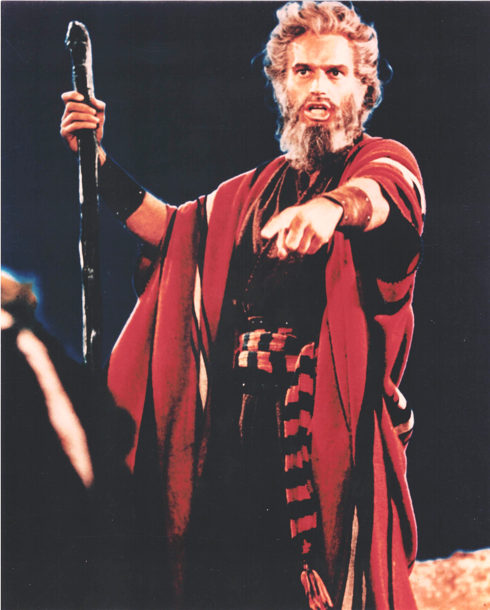

Product No. HEC-0074
$19.99
Shipping: $8.95
Description
8x10 color photograph as Moses
Full Description
Charlton Heston (Deceased) was an American actor whose commanding voice, imposing presence, and heroic screen persona made him one of the most recognizable stars of classic Hollywood. Born John Charles Carter on October 4, 1923, in Wilmette, Illinois, he began acting on stage before moving into film and television. Heston became especially famous for starring in large-scale historical and biblical epics. He portrayed Moses in Cecil B. DeMille's "The Ten Commandments" (1956), one of the defining roles of his career. He later won the Academy Award for Best Actor for his performance as Judah Ben-Hur in "Ben-Hur" (1959), which became one of Hollywood's most celebrated epic films. His other notable movies include "The Greatest Show on Earth," "Touch of Evil," "El Cid," "55 Days at Peking," "The Agony and the Ecstasy," "The War Lord," and "Khartoum." Heston also became strongly associated with science-fiction through films such as "Planet of the Apes," "The Omega Man," and "Soylent Green." Over the course of his career, he portrayed larger-than-life historical figures, military leaders, adventurers, and survivors, while also appearing in television and on stage. Charlton Heston died on April 5, 2008, at age 84. His performances in "The Ten Commandments," "Ben-Hur," and "Planet of the Apes" remain iconic, making his autographs, photographs, and movie memorabilia highly desirable among collectors of classic Hollywood and science-fiction history.
Condition
Excellent condition